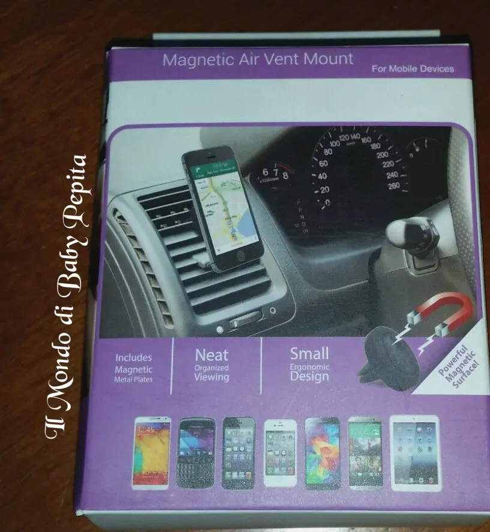
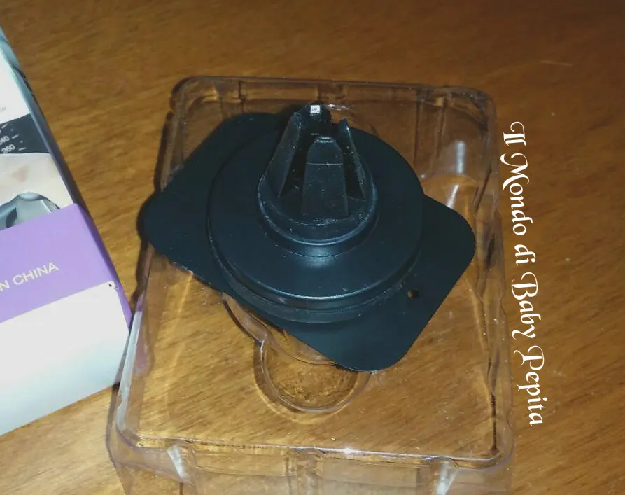
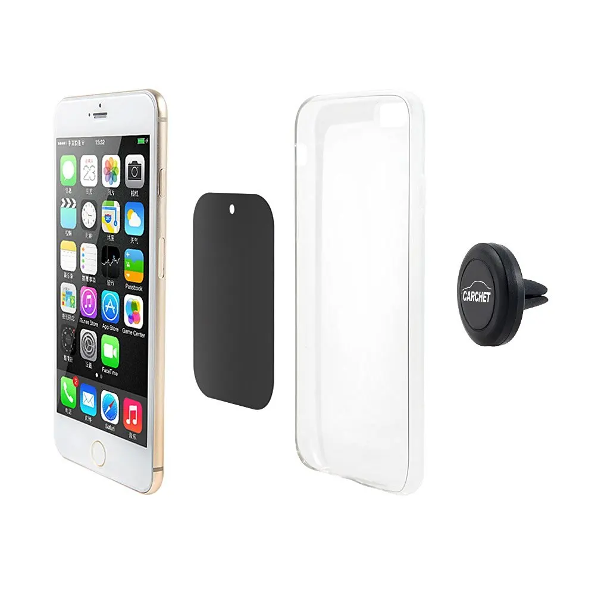
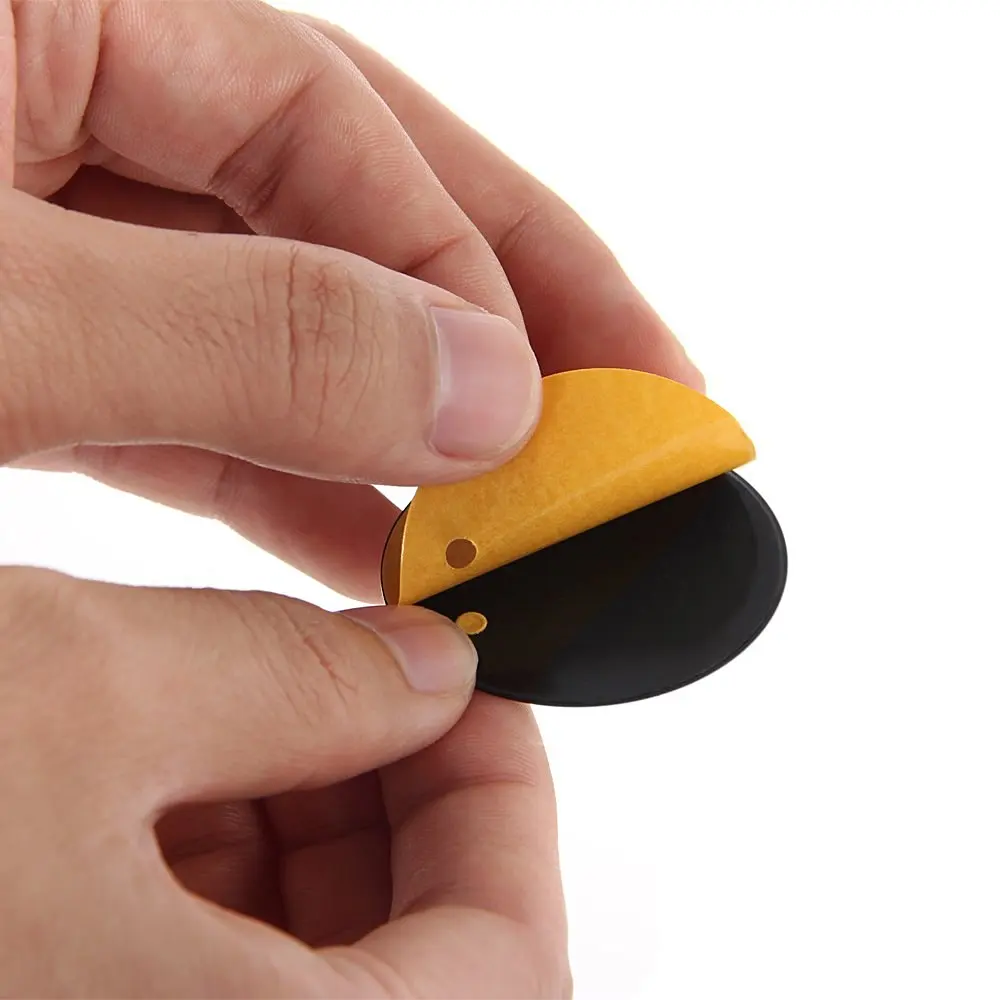
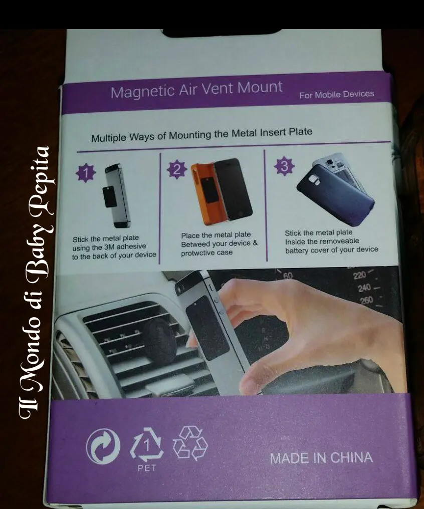

CARCHET - supporto magnetico per smartphone

Amazon ormai è da un bel pò protagonista delle mie recensioni, e via via vi mostro sempre cose nuove e di svariati argomenti. .Stavolta ho voglia di parlarvi di un accessorio per chi guida e usa il proprio smartphone in modo frequente. . Sappiamo quanto sia illegale e incivile usare il cellulare mentre si guida, sia per la propria incolumità quanto quella per i pedoni che incontriamo per strada. .
Sappiamo quanto sia illegale e incivile usare il cellulare mentre si guida, sia per la propria incolumità quanto quella per i pedoni che incontriamo per strada. .
E questo supporto dunque, fa proprio al caso vostro. .

Sto parlando di un supporto universale magnetico che si mette in auto per far aderire alla piastra interna,appunto magnetica, il nostro smartphone, di modo che sia al posto giusto così da non incombere in incidenti ma allo stesso tempo tenerlo anche sott'occhio. .

Ormai noi usiamo lo smartphone non solo per parlare e messaggiare ma anche come navigatore gps e quindi parecchie volte, ci può capitare che l'uso del telefonino sia indispensabile per arrivare alla meta. .Questo supporto è davvero semplice da utilizzare, non ci basterà altro che 2 movimenti . .ovvero:1. inserire il supporto nella bocchetta dell'aria condizionata dell'auto.
2. inserire la piastra magnetica, che troveremo nella confezione, dietro al cellulare che potrete sia attaccare con un adesivo che già è in dotazione oppure attaccarlo dietro alla cover. .così da non lasciare tracce di adesivi al telefono.
Il gioco è fatto!Ora tutte le volte che userete l'auto non vi basterà altro che appoggiare il telefono sul supporto e nient'altro. .Più semplice di così credo non esista niente. .

Se volete acquistarlo il link per farlo è:https://www.amazon.it/dp/B015XNNCNK/ref=cm_cr_ryp_prd_ttl_sol_0
Per quanto riguarda me seguitemi su:FACEBOOKINSTAGRAMTWITTER